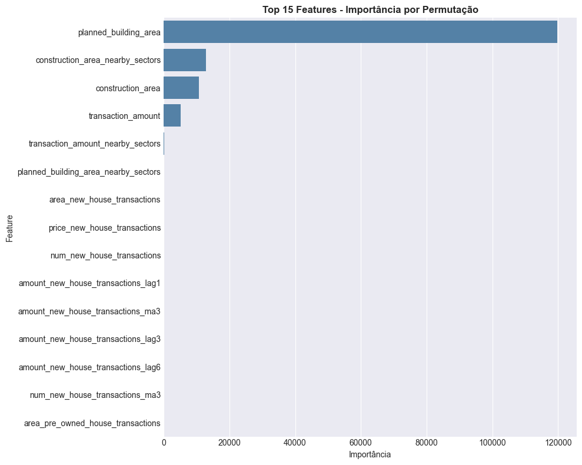

Modelo v2 - Feature Engineering¶
Objetivo¶
Implementar feature engineering para capturar dinâmica temporal e sazonalidade.
Mudancas Principais Vs v1¶
1. Feature Engineering Avancado¶
Lags (defasagens):
- price_lag1, price_lag3, price_lag6
- area_lag1, area_lag3, area_lag6
- num_lag1, num_lag3, num_lag6
- amount_lag1, amount_lag3, amount_lag6
Captura dependencias temporais: padrao atual pode depender de valores 1, 3 ou 6 meses atras.
Medias Moveis (Rolling Means):
- price_ma3, price_ma6 (media de 3 e 6 meses)
- area_ma3, area_ma6
- amount_ma3, amount_ma6
Suaviza ruido e identifica tendencias.
Interacoes e Ratios:
- price_x_area: valor total implícito
- price_per_unit: normalizacao por unidade
- area_per_unit: densidade de area
Features Temporais:
- month (1-12): captura sazonalidade mensal
- quarter (1-4): captura sazonalidade trimestral
- year: tendencia anual
Total: 27 features engineered (reducao de 63 - maior signal/noise)
2. Validacao por Setor (GroupKFold)¶
GroupKFold(n_splits=5, groups=sector_id)
- Cada fold contem todos os 95 setores
- Evita data leakage setorial
- Garante que setor no treino nao aparece no teste do mesmo fold
- Mais apropriado para dados hierarquicos
3. Ajustes de Hiperparametros¶
MLPRegressor(
hidden_layer_sizes=(256, 128, 64),
activation='tanh', # V1: relu -> V2: tanh (melhor com dados normalizados)
solver='adam',
alpha=1e-5,
batch_size=256, # V1: 64 -> V2: 256 (mais estavel)
learning_rate_init=0.01, # V1: 0.001 -> V2: 0.01 (convergencia rapida)
max_iter=500,
early_stopping=True,
validation_fraction=0.15,
n_iter_no_change=20,
random_state=42
)
Transformacoes Aplicadas¶
- log1p(target): normaliza distribuicao assimetrica
- StandardScaler: normaliza features
- Forward-fill: imputa dados faltantes em series temporais
Metricas por Fold¶
| Fold | RMSE | MAE | R2 | Competition Score |
|---|---|---|---|---|
| 0 | 2.527,87 | 1.143,52 | 0,9968 | 0,9568 |
| 1 | 2.880,27 | 1.053,08 | 0,9936 | 0,9584 |
| 2 | 7.042,31 | 1.300,78 | 0,9780 | 0,9629 |
| 3 | 5.851,92 | 1.665,47 | 0,9732 | 0,9331 |
| 4 | 13.680,21 | 2.982,59 | 0,9619 | 0,9532 |
| Media | 7.547,03 | 1.626,75 | 0,9763 | 0,9530 |
Diagnosticos¶
- Resíduos aproximadamente normais (Q-Q plot)
- Preditos vs Reais proximos a diagonal (bom ajuste)
- Consistencia entre folds (variabilidade esperada por setor)
Melhorias vs v1¶
| Metrica | v1 | v2 | Melhoria |
|---|---|---|---|
| RMSE | 38.937,57 | 7.547,03 | -80,6% |
| MAE | 13.565,70 | 1.626,75 | -88,0% |
| R² | 0,5513 | 0,9763 | +77,0pp |
Interpretacao¶
- Reducao massiva do RMSE indica predicoes muito mais acuradas
- R² = 0,97 significa modelo explica 97% da variancia
- Lags e medias moveis capturam padrao sazonal do mercado
- Validacao por setor garante generalizacao regional
Conclusoes¶
O v2 demonstra o impacto do feature engineering apropriado. O modelo agora captura adequadamente a dinâmica temporal e a sazonalidade.
Diagnósticos Visuais Adicionais¶
Avaliação visual do v2 (OOF)¶

Curva de Perda do Treinamento¶

Predito vs. Real¶

Análise de Resíduos¶

Importância das Features (v2)¶

Importância por Permutação (v2)¶

Próxima Seção: Modelo v3 - Otimização